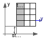

Package with base classes for Buildings.Rooms.Examples.BESTEST
This package contains base classes that are used to construct the models in Buildings.Rooms.Examples.BESTEST.
Extends from Modelica.Icons.BasesPackage (Icon for packages containing base classes).
| Name | Description |
|---|---|
| DaySchedule | Schedule that repeats every day |
Schedule that repeats every day

Time schedule that is used for set points.
Extends from Modelica.Blocks.Sources.CombiTimeTable (Table look-up with respect to time and linear/periodic extrapolation methods (data from matrix/file)).
| Type | Name | Default | Description |
|---|---|---|---|
| Table data definition | |||
| Boolean | tableOnFile | false | = true, if table is defined on file or in function usertab |
| Real | table[:, :] | fill(0.0, 0, 2) | Table matrix (time = first column; e.g., table=[0,2]) |
| String | tableName | "NoName" | Table name on file or in function usertab (see docu) |
| String | fileName | "NoName" | File where matrix is stored |
| Boolean | verboseRead | true | = true, if info message that file is loading is to be printed |
| Table data interpretation | |||
| Integer | columns[:] | 2:size(table, 2) | Columns of table to be interpolated |
| Smoothness | smoothness | Modelica.Blocks.Types.Smooth... | Smoothness of table interpolation |
| Extrapolation | extrapolation | if size(table, 1) == 1 then ... | Extrapolation of data outside the definition range |
| Real | offset[:] | fill(0, size(table, 2) - 1) | Offsets of output signals |
| Time | startTime | 0 | Output = offset for time < startTime [s] |
| Type | Name | Description |
|---|---|---|
| output RealOutput | y[nout] | Connector of Real output signals |